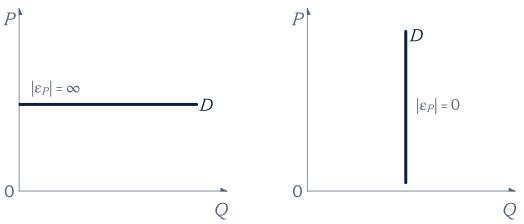
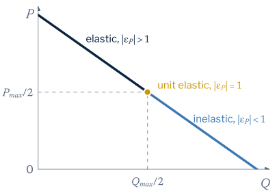
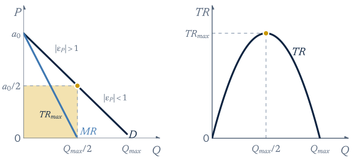

Lesson 4
FIN 30210 Managerial Economics
Jason R. Reed, PhD, University of Notre Dame
Elasticity measures how responsive quantity demanded is to changes in price. So why not use the slope, \(b_1 = \Delta Q_D / \Delta P\)?
Slope measured in dollars
\[ b_1 = \frac{\Delta Q_D}{\Delta P} = \frac{22 - 12}{2.10 - 2.30} = \frac{10}{-0.20} = -50 \]
Slope measured in cents
\[ b_1 = \frac{\Delta Q_D}{\Delta P} = \frac{22 - 12}{210 - 230} = \frac{10}{-20} = -0.50 \]
Same demand, same price change: the slope differs by a factor of 100.
Price elasticity of demand The percentage change in the quantity demanded of a good or service, given a percentage change in its price.
\[ E_P = \left| \frac{\%\,\Delta Q_D}{\%\,\Delta P} \right| \]
One issue: starting points matter, sometimes a lot. We observe different elasticities depending on whether price increases or decreases.
Problem 4.1 The price elasticity of demand for a product is −2. If its price falls by 5%, by what percentage does quantity demanded change?
Solution
\(-2 = \dfrac{\%\,\Delta Q_D}{-5\%} \;\Rightarrow\; \%\,\Delta Q_D = +10\%\)
The midpoint formula helps by averaging the starting and ending prices and quantities:
\[ E_P = \frac{\dfrac{Q_2 - Q_1}{(Q_2 + Q_1)/2}}{\dfrac{P_2 - P_1}{(P_2 + P_1)/2}} \]
One issue arises when nonlinear demand functions are introduced.
Unlike slope, the point price elasticity takes the first derivative of the demand curve and evaluates it at a given point on the curve.
\[ E_P = \left| \left(\frac{dQ_D}{dP}\right) \cdot \left(\frac{P}{Q_D}\right) \right| \]
Example The demand equation for a product is \(Q_D = 50 - 2.25P\). Calculate the point price elasticity of demand at \(P = 2\).
\[ E_P = \left| \left(\frac{dQ_D}{dP}\right)\left(\frac{P}{Q_D}\right) \right| \]
\[ = \left| -2.25 \left(\frac{P}{50 - 2.25P}\right) \right| = \left| -2.25 \left(\frac{2}{50 - 2.25(2)}\right) \right| \]
\[ = \left| -2.25 \left(\frac{2}{45.5}\right) \right| = |-0.099| = 0.099 \]
At $2, demand is highly inelastic.
Elastic
\(|\varepsilon_P| > 1\). The percentage change in quantity demanded is greater than the percentage change in price.
Inelastic
\(|\varepsilon_P| < 1\). The percentage change in quantity demanded is less than the percentage change in price.
Unit elastic
\(|\varepsilon_P| = 1\). The percentage change in quantity demanded equals the percentage change in price.

Perfectly elastic \(|\varepsilon_P| = \infty\). A horizontal line: price and quantity have no relationship, and the slope is zero.
Perfectly inelastic \(|\varepsilon_P| = 0\). A vertical line: price and quantity have an undefined slope.

A straight demand curve has a constant slope, but its elasticity runs from elastic at high prices to inelastic at low prices.
Substitutability More substitutes, more elastic demand.
Share of income A higher share of income, more elastic demand.
Luxuries vs. necessities Demand for luxuries is more elastic.
Time More time available, more elastic demand.
Firms (and governments) understand the connection between elasticity and revenue:
Elastic goods Lower prices increase revenue.
Inelastic goods Higher prices increase revenue.
Unit-elastic goods Revenue is already at its maximum.

Marginal revenue hits zero at the midpoint of the demand curve, where demand is unit elastic and total revenue is at its maximum.
| \(\lvert\varepsilon_P\rvert\) | \(\Delta P\) | \(\Delta Q\) | \(\Delta TR\) |
|---|---|---|---|
| \(> 1\) | − | + | + |
| \(> 1\) | + | − | − |
| \(< 1\) | − | + | − |
| \(< 1\) | + | − | + |
When demand is elastic, price and revenue move in opposite directions. When it’s inelastic, they move together.
Let \(Q = b_0 - b_1 P\) be a linear demand curve. Solve for price in terms of quantity:
\[ P = a_0 - a_1 Q, \quad \text{where } a_0 = \frac{b_0}{b_1},\; a_1 = \frac{1}{b_1} \]
\[ TR = P \cdot Q = (a_0 - a_1 Q)Q = a_0 Q - a_1 Q^2 \]
\[ \frac{dTR}{dQ} = MR = a_0 - 2a_1 Q \]
Set \(MR = 0\) and solve for \(Q\) to find the revenue-maximizing quantity: \(Q = \dfrac{a_0}{2a_1} = \dfrac{b_0}{2}\).
Problem 4.8 For the demand equation \(Q = 50 - 2.5P\), calculate the point price elasticity of demand and total revenue at \(P = 0, 5, 10, 15,\) and \(20\). What can you conclude about the relationship between price elasticity and total revenue?
\[ \varepsilon_P = \left(\frac{dQ}{dP}\right)\left(\frac{P}{Q}\right) = -2.5\left(\frac{P}{50 - 2.5P}\right), \qquad TR = PQ = P(50 - 2.5P) \]
| \(P\) | \(Q\) | \(\varepsilon_P\) | Demand is | \(TR\) |
|---|---|---|---|---|
| 0 | 50 | 0 | Perfectly inelastic | 0 |
| 5 | 37.5 | −0.33 | Inelastic | 187.5 |
| 10 | 25 | −1.00 | Unit elastic | 250 |
| 15 | 12.5 | −3.00 | Elastic | 187.5 |
| 20 | 0 | −∞ | Perfectly elastic | 0 |
Total revenue rises while demand is inelastic, peaks where demand is unit elastic, and falls once demand turns elastic.
Income elasticity of demand measures how responsive buyers are to changes in income.
\[ \varepsilon_I = \left(\frac{\partial Q_D}{\partial I}\right)\left(\frac{I}{Q_D}\right) \]
Normal goods: positive Necessities: \(0 < \varepsilon_I < 1\). Luxuries: \(\varepsilon_I \ge 1\).
Inferior goods: negative \(\varepsilon_I < 0\)
Here we care about the direction, so we don’t take the absolute value.
How do luxuries, necessities, and inferior goods relate? Let demand for two goods depend on both prices and on money income,
\[ Q_1 = Q_1(P_1, P_2, I) \quad \text{and} \quad Q_2 = Q_2(P_1, P_2, I) \]
and let consumers face the budget constraint
\[ I = P_1 Q_1 + P_2 Q_2 \]
Differentiate both sides of the budget constraint with respect to \(I\):
\[ P_1\left(\frac{\partial Q_1}{\partial I}\right) + P_2\left(\frac{\partial Q_2}{\partial I}\right) = 1 \]
Multiply each term by \(\frac{Q_i}{I} \cdot \frac{I}{Q_i} = 1\) and rearrange:
\[ \underbrace{\frac{P_1 Q_1}{I}}_{\omega_1}\underbrace{\left(\frac{\partial Q_1}{\partial I}\right)\left(\frac{I}{Q_1}\right)}_{\varepsilon_{1,I}} + \underbrace{\frac{P_2 Q_2}{I}}_{\omega_2}\underbrace{\left(\frac{\partial Q_2}{\partial I}\right)\left(\frac{I}{Q_2}\right)}_{\varepsilon_{2,I}} = 1 \]
\[ \omega_1 \varepsilon_{1,I} + \omega_2 \varepsilon_{2,I} = 1 \]
The income elasticities, weighted by each good’s share of income, must sum to one.
Problem 4.15 A consumer buys three goods, \(Q_1\), \(Q_2\), and \(Q_3\), which take 80%, 10%, and 10% of total income. The income elasticities for \(Q_1\) and \(Q_2\) are \(\varepsilon_{1,I} = 0.5\) and \(\varepsilon_{2,I} = 1.5\). How would you classify the three goods?
\(Q_1\) and \(Q_2\)
\(0 < \varepsilon_{1,I} < 1\), so \(Q_1\) is a necessity. \(\varepsilon_{2,I} > 1\), so \(Q_2\) is a luxury.
\(Q_3\)
\((0.8)(0.5) + (0.1)(1.5) + (0.1)\varepsilon_{3,I} = 1\), so \(0.1\varepsilon_{3,I} = 0.45\) and \(\varepsilon_{3,I} = 4.5\). \(Q_3\) is a luxury too.
Cross-price elasticity measures the percentage change in demand for good \(X\), given a percentage change in the price of good \(Y\).
\[ \varepsilon_Y = \left(\frac{\partial Q_X^d}{\partial P_Y}\right)\left(\frac{P_Y}{Q_X^d}\right) \]
Substitutes A positive relationship
Complements A negative relationship
Again we care about the direction, so we don’t take the absolute value.
Up next: Lesson 5
FIN 30210 Managerial Economics